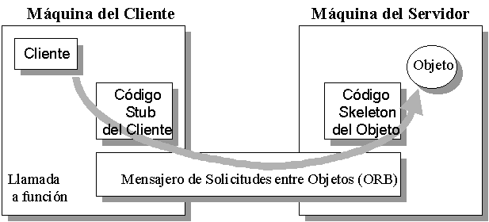

graphql
Un poco de historia
- Años 90: COM, Corba, RMI para comunicación distribuida
- Año 1998: Nace SOAP como protocolo de acceso a objetos
- Año 2000: Roy Fielding crea REST Api
- Año 2015: Facebook crea GraphQL
Corba (años 90)
- Estandar para la comunicación de objetos distribuidos
- Independencia del lenguaje entre cliente y servidor
- Comunicación TCP/IP. Problemas con cortafuegos
- Especificación compleja y cara de implementar
- APIs incompletas y dificiles de utilizar

Soap (1998)
- Protocolo de comunicación en entornos distribuidos
- Utiliza XML para el almacenamiento de datos
- Comunicación usando Http
- Es lento
- Dependencica de WSDL

REST (2000)
- REST (Representational State Transfer)
- Creado por Roy Fielding (padre de la especificación Http)
- Arquitectura para diseñar aplicaciones en red usando Http
- Se basa en el uso de recursos
Principios REST API
- Identificación de recursos Acceso único a traves de URLs
- Métodos con significado (GET, POST, PUT ...)
- Respuesta en multiples formatos Json, Xml ...
- Principio HATEOAS: respuesta en forma de hipervinculo

Ejemplo endpoints
GET /posts
GET /post/12
GET /post/12/comments
GET /post/12/comments/10
POST /posts/
DELETE /post/12
Facebook tiene problemas (2012)
- Problemas de rendimiento
- Cambio modelo App Nativa
- Refactorización API REST

Problemas de API Rest
1. Problemas de latencia

Problemas de API Rest
2. Tamaño Payload
La respuesta o payload es muy grande. ¿Necesitamos todos los datos?Problemas de API Rest
3. Custom Endpoints
Necesidades del proyecto despues de haber diseñado nuestros endpointsProblemas de API Rest
3. Versionado de endpoints
¿Cómo mantenemos los endpoints de versiones anteriores?api/v1/article/1
api/v2/article/1
Hablemos de Grahpl ...

- Especificación nacida en 2012 como solución a un problema de producto en Facebook
- Redefine la forma en la que pedimos datos al backend
- No trabaja con endpoints. !!! Unico punto de entrada!!!
- Servidor devuelve sólo lo que graphql pide
- Sistema de tipado entre campos
- Anidamiento de consultas
Construyendo el servidor
- Java : Graphql-java
- JS: Apollo-server
- Elixir: Phoenix
- Ruby: Graphql-gem
- Python: Graphene
Schema (SDL)
- Colección de tipos Graphql (queries, mutation, type)
- Types: Modelo de datos
- Queries: representan las consultas
- Mutation: consultas que alteran datos (updates, insert, deletes)
Schema (SDL): Types
- Modelo de datos tipado
- Paso de parámetros
- ! indica campos obligatorios
- Anidamiento de consultas
type Author{
id: Int!
firstName: String!
lastName: String!
books: [Book!]!
}
Schema (SDL): Queries
- Consulta para obtener datos en modo lectura (GET)
- Se realizan de forma asincrona
type Query{
allBooks: [Book!]!
allAuthors: [Author!]!
}
Schema (SDL): Mutations
- Consulta para alterar datos (POST)
- Se realizan de forma sincrona
mutation createAuthor(name:"Pepe", lastName:"Garcia"){
name
}
Resolver
- Funciones que indican como resolver la consultas sobre el schema
Query: {
allPeople(obj, args, context, info) {
return findAll(people, { id: args.id });
},
},
¿Y la respuesta?
- json con 2 elementos (data y error)
{"data":
{"allBooks":[]}
}
Graphi
- Herramienta para validar y testear las peticiones graphql
Demo
- Graphi: simulando el cliente
- Apollo-server: servidor
- Sequelize: ORM
- Mysql: BBDD